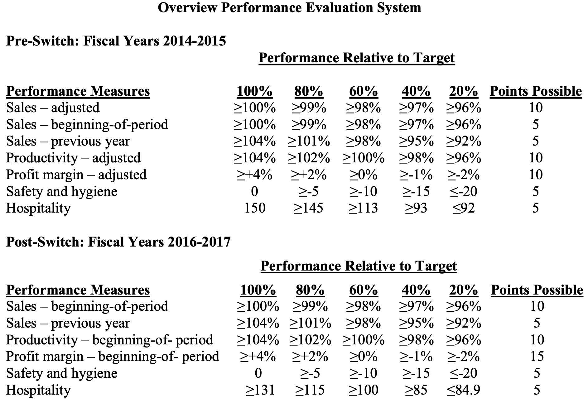
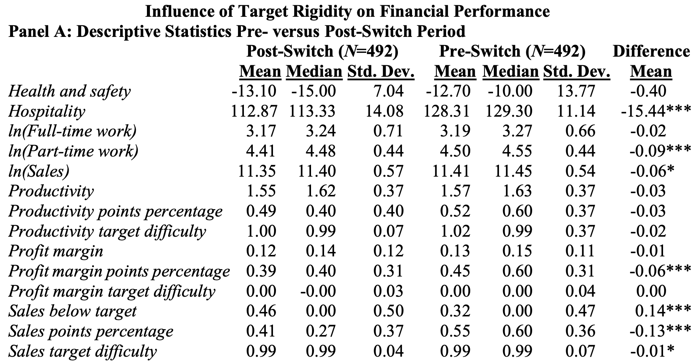
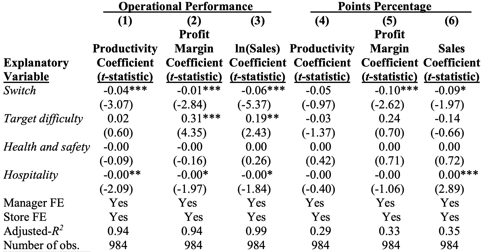
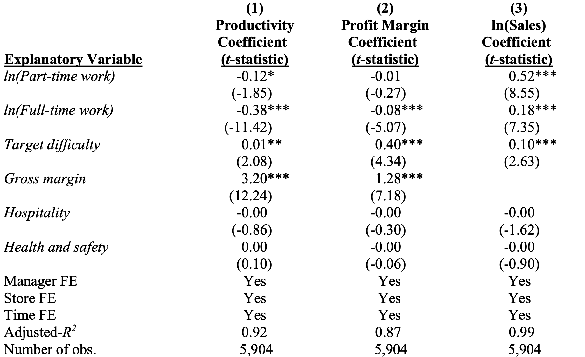
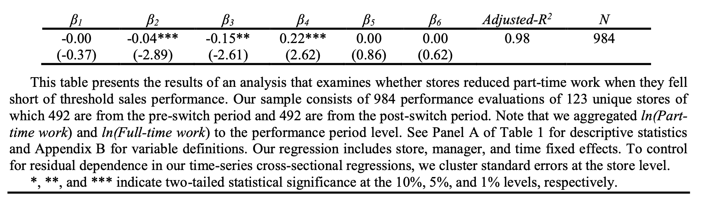
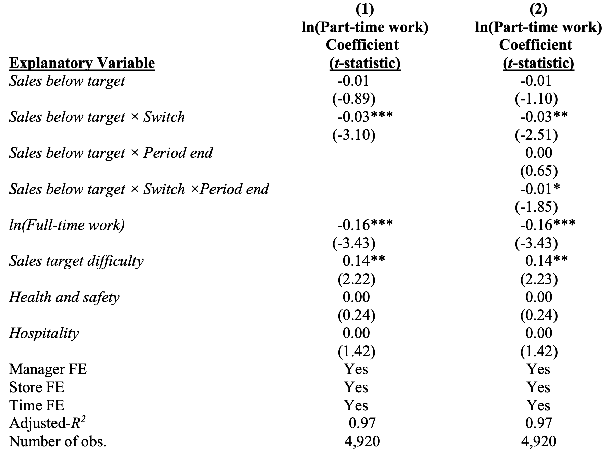

How flexible targets retain balance in managerial actions
1/9/23
目次
- これまでやってきた研究の概要
- How flexible targets retain balance in managerial actions
研究の概要
- これまで，基本的には定量的研究を幅広く行ってきました。
- 企業データを使った研究
- 公表財務データを使った研究
- 実験研究
- （アンケート）
企業データを使った研究
- 小売店の店長の違いが業績に与える影響 (佐久間 2016)
- 主観的業績評価のバイアスと昇進選抜との関係 (小笠原・佐久間・三矢 2016)
- 業績評価に使われる目標の期中調整が従業員の行動に与える影響 (Erkens, Sakuma, and Schloetzer)
- 主観的業績評価を行う際のバイアス (Grabner and Sakuma)
公表財務データを使った研究
- コスト変動（コストの非対称性）(Hayakawa, Ogasawara, Sakuma, and Schloetzer 2023 forthcoming)
- ファンダメンタル分析 (福嶋・佐久間・濵村 2017)
実験研究
- 業績指標の選び方がそれを使った意思決定に与える影響 (佐久間・新井・妹尾・末松 2015)
- 業績評価の仕組みと従業員の創造性との関係 (早川・三矢・佐久間・澤田・田口 2020)
- 業績指標の見せ方（フレーミング）が意思決定に与える影響 (実験準備中)
- 相対的業績評価におけるフィードバック情報の選択 (実験準備中)
アンケート
- 上司の従業員に対する評価と従業員の自己評価の乖離 (Haraguchi, Shibata, Sakuma)
（一部例外もありますが）基本的には，業績評価の仕組みと（1）評価者の意思決定や（2）従業員の行動との関係についてを研究の主題としています。
研究報告
How Flexible Targets Retain Balance in Managerial Actions
- David Erkens (CEIBS: China Europe International Business School），Jason Schloetzer (Georgetown University)との共著です。
- 査読誌に投稿中の論文です。
.png)

昨年度学域セミナーで報告した研究を先生方からいただいたコメントを踏まえて1年間かけて改訂しました。改訂後の研究を報告させていただきます。
概要
- 目標の期中調整が，従業員の努力配分の偏りを防ぐ効果を持つことを予測・実証
- 業績評価に用いる年次目標を期中に調整する実務に注目
- 年次予算と連動した目標を設定
- 前月の実績に合わせて，毎月目標を調整
- リサーチサイトの企業は，目標の期中調整を廃止
- 廃止の前後のデータを分析することで，期中調整の効果を検証
II. HYPOTHESIS DEVELOPMENT
Background on Target Setting for Business Unit Managers
- 企業は，従業員，特に高い組織階層の従業員に複数の業績目標を課す
- 複数のタスクに努力を割り振る必要がある
- 業績評価の仕組みでは，複数の業務の重みづけのバランスをとることで，企業にとって望ましい努力配分をするよう従業員を動機付ける (Feltham and Xie 1994; Kaplan and Norton 1996; Ittner et al. 1997; Datar et al. 2001 )
- しかし，実務において，複数指標の重みづけを従業員ごとに変えるようなことはなく，代わりに目標の難易度を調整する (Bol et al. 2010; Anderson et al. 2020)
- 目標値は，努力配分に対する指針となる (Brüggen et al. 2018)
- 目標の難易度の調整を通した努力配分に対する働きかけは，制度変更を伴わないという意味で企業にとって柔軟に運用できる
- 給与制度の変更はそもそも大変
- 個別に契約を変えることは企業の管理コストや契約の複雑性をもたらすだけでなく，従業員が抱く公正感にも影響を与えうる (Bol et al. 2010; Merchant et al. 2018; Anderson et al. 2020)
- 具体的な目標を設定することは，単にdo-your-bestを求めるよりも良いとされるが，その動機付け効果は目標の達成可能性（難易度）による (Gopalakrishnan et al. 2015)
- 目標は高いほど高い動機づけ効果が見込めるが，あまりに高い目標は諦めにつながる。
- 期首に（難しいけど）達成可能な目標を設定することは良い(Bonner and Sprinkle 2002; Locke and Latham 2002; Matějka and Ray 2017)
- しかし，達成可能な状態を維持するために期中に目標を調整するべきか否かについては議論がある(Liu and Leitch 2013; Arnold and Artz 2015; Arnold and Artz 2019; Kelly et al. 2015)
Intra-Period Target Adjustments
- （例え期首に程よいレベルの目標が設定されたとしても）予期せぬ環境変化などによって，目標が達成不可能になることもあり得る (Gibbs et al. 2004)
- そんな時，目標を期中に調整（下方修正）することで，インセンティブ効果を維持することができる(Saly 1994; Acharya et al. 2000)
- このような実務は一般的 (e.g., Libby and Lindsay 2010)
- しかし，先行研究では，期中の目標調整にして異なった見解が示されてきた。
- 上記の通り，インセンティブ効果を維持し，業績を改善するという研究 (Liu and Leitch 2013; Kelly et al. 2015)
- 業績に対するネガティブな効果 (Arnold and Artz 2015)
- 目標が曖昧に (Marginson and Ogden 2005)
- 目標調整がなされることを前提に動くように (Saly 1994; Acharya et al. 2000)
- （他者の目標調整を目の当たりにすることで）評価制度に対する公平感に対する懸念が生じる (Feichter et al. 2018)
- 実質的に権限以上がなされていないことになる (Arnold et al. 2022)
Adjusting Targets of Substitutable Tasks
マルチタスクの状況において，インセンティブ効果は複数タスクが補完的か代替的かによって変わる (Holmstrom and Milgrom 1991; Datar et al. 2001; Dikolli et al. 2009)
従業員が複数のタスクを代替的だと考える時，予測不能かつ管理不能な要因が従業員と企業の間の動機の不一致（misalignment）を引き起こしうる
III. RESEARCH SETTING
Research Site
概要
- 創業100年超，国内外約240店舗(延べ，全店舗直営)を展開するベーカリーチェーンA社
- ほとんどの店舗がデパート，ショッピングセンター内に立地
- 各店舗で毎日粉から作るスクラッチ方式
店長
- 店長は，一般的に15年程度の経験を経て店長に就任する
- 数年ごとにローテーション
- プロフィットセンターの責任者として，店舗の利益（貢献利益）に責任を持つ
- 製品ミックスや生産量
- パートタイマーのシフト
- 店舗ごとのプロモーション活動（イベントなど）
- レシピはほとんどが各店舗共通
- 売値の変更権限はない（閉店前の値引き販売等はできない）
Performance Evaluation System
評価制度
- ボーナスは，主に業績によって決まる
- 半年に一回， 月給の140%から280%が支給される
- あらかじめ決められた基準によってポイントを得て，ポイントに応じて5段階の最終評価が決まる

制度変更
- 2015年度までは 年間目標が月次で調整されていた
- 2016年度からは調整を廃止
IV. SAMPLE AND DESCRIPTIVE STATISTICS
Sample Selection
制度変更の前後2年ずつ(2014-2017年度)
店舗ごとの財務データ，予算（目標）データ，店長の評価データ
123店舗，213名の店長
Descriptive Statistics
制度変更後売上高は減少
生産性(\(\frac{\text{売上高}-\text{材料費}}{\text{人件費}}\))は有意な変化なし

V. HYPOTHESIS TESTS
Target Rigidity and Financial Performance
\[ \begin{split} Performance_{ip} =& \beta_1Switch_p + \beta_2 Target \: difficulty_{ip} + \beta_3 Hospitality_{ip} \\ &+ \beta_4 Health \: and \: safety_{ip} + α_i + λ_m + ε_{ip} \end{split} \tag{1}\]

制度変更は，予算関連の業績の低下につながっている
売上高については6％
生産性については2.6%
業績評価の結果（5段階）については，生産性以外は低下
業績の低下とともに，努力の偏りが生じている可能性
Part-Time Work and Balanced Managerial Actions
業績の変化の一部は，努力配分の変化からきているのではないか？
パートタイマーの時間（人件費）に注目
\[ \begin{split} Performance_{it} =& \beta_1 \ln(Part-time \: work)_{it} + \beta_2 \ln(Full-time \: work)_{it} \\ &+ \beta_3 Target \: difficulty_{it} + \beta_4 Hospitality_{ip} \\ &+ \beta_5 Health \: and \: safety_{ip} + α_i + λ_m + γ_t + ε_{it} \end{split} \tag{2} \]

パートタイマーの労働時間は，
生産性に負の影響
売上高に正の影響
Opportunism in Part-Time Work
- 売上高を犠牲にして生産性を取るのは，売上目標の達成が難しくなった時のはず。
\[ \begin{split} \ln(Part-time \: work)_{ip} =& \beta_1Sales \: below \: target_{ip} + \beta_2(Sales \:below \: target_{ip} × Switch_p) \\ &+ \beta_3 \ln(Full-time \: work)_{ip} + \beta_4 Sales \: target \: difficulty_{ip} \\ &+ \beta_5 Hospitality_{ip} + \beta_6 Health \: and \: safety_{ip} + α_i + λ_m + γ_p + ε_{ip} \end{split} \tag{3} \]

\(\beta_2\) が有意に負
- 制度変更後，売上高が，業績評価上の最低ライン（目標比96%）を下回った時，パートタイマーの労働時間の減少幅が大きくなる。
月次レベルでさらに分析
\[ \begin{split} \ln(Part-time work)_{it} =& \beta_1 Sales \: below \: target_{it-1} + \beta_2 (Sales \: below \: target_{it-1} × Switch_t) \\ &+ \beta_3 \ln(Full-time \: work)_{it} + \beta_4 Sales \: target \: difficulty_{it} \\ &+ \beta_5 Hospitality_{it} + \beta_6 Health \: and \: safety_{it} + α_i + λ_m + γ_t + ε_{it} \end{split} \tag{4} \]
\(\beta_2\)は有意に負
- 制度変更後，前月の売り上げが芳しくない時，パートタイマーの時間が短く
model2 から，上記傾向は評価期間の最後により顕著に

Additional Evidence on Causal Mechanism
３つの追加分析
Target Rigidity Encourages Opportunism in Part-Time Work
Store Managers Sacrifice Sales
Part-Time Work Supports Sales Activities
VI. CONCLUSION
結論
Adjusting targets downward during the performance period can help firms retain balance in managerial actions when business unit managers work on substitutable tasks.
- 目標の期中調整が無くなったのち，売り上げ目標が達成不能だと思われる時，パートタイマーの時間を削減することで，生産性目標だけでも撮りに行こうとする行動をとるように
- このような行動は，評価期間終盤により顕著に現れる
貢献
目標の期中調整は，複数の代替的なタスクのバランスを取るのに役立つ
- 当初の目標に対するコミットメントがなくなる，という明確なデメリットがある目標の期中調整が実務上多く行われていることの理由の一つ
複数タスクのインセンティブのバランスを保つためには，期中調整が必要
- そうでないと，全てのタスクの目標達成が困難な時，あるタスクを諦めて特定のタスクに努力を集中するような行動をとる可能性がある
References
神戸大学商学・経営学研究会